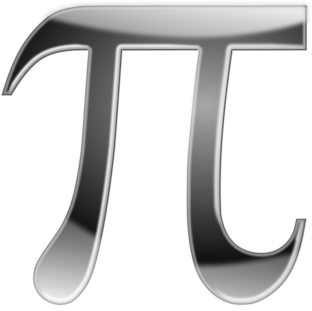

4.6.- Combinando modificadores

Una vez que hemos estudiado los modificadores más importantes, y dado que no todos son excluyentes entre sí, vamos a ver qué sentido o utilidad práctica podrían tener algunas de sus combinaciones. Recordemos la sintaxis completa de la declaración de un atributo teniendo en cuenta la lista de todos los modificadores:
[private | protected | public] [static] [final] [transient] [volatile]; Quitando transient y volatile, que en este curso no los vamos a utilizar, podríamos tener a la vez hasta tres modificadores:
- un modificador de acceso (según queramos que la visibilidad del atributo sea de paquete, privada, "protegida" o pública),
- un modificador de contenido
final(si queremos que el atributo no pueda cambiar de valor, es decir, que sea constante y no variable), - un modificador de contenido
static(si queremos que el atributo sea de clase y no de objeto).
Las combinaciones más habituales de modificadores que nos vamos a encontrar son las siguientes:
| Acceso | Mutabilidad | De objeto/de clase | Interpretación |
|---|---|---|---|
private |
final |
Atributo de objeto constante y privado. | |
|
|
Atributo de objeto variable y privado. | |
|
|
static |
Atributo de clase variable y privado. |
|
final |
static |
Atributo de clase constante y público. |
Salvo el último caso, nosotros ya hemos visto algunos ejemplos de esas combinaciones para nuestra clase Vehiculo:
- atributos de objeto constantes y privados:
capacidadDeposito,consumoMedio,fechaMatriculacion,matricula; - atributos de objeto variables y privados:
nivelDeposito,estadoMotor,kilometrosTotales,kilometrosParciales; - atributos de clase variables y privados:
vehiculosCreados,kilometrosTotalesFlota,vehiculosArrancados.
Si te fijas, la visibilidad de todos esos atributos es privada. No nos interesa que desde fuera de la clase se pueda observar o manipular el valor de esos atributos que conforman las caracerísticas de cada objeto vehículo particular (o, en el caso de los estáticos, características de la clase en general). Lo habitual, como ya hemos reiterado en varias ocasiones, es que los atributos sean privados.
El cuarto ejemplo de combinación de modificadores que se propone es el de atributos de clase constantes. ¿Qué utilidad podría tener disponer de atributos de clase constantes? Una vez más, volvemos a nuestro modelo de la clase vehículo: por ejemplo, podría interesarnos tener almacenada cuál es la máxima y mínima capacidad del depósito de combustible para un vehículo. Está claro que la capacidad no puede ser negativa, ni tampoco cero. Nos tocaría a nosotros como diseñadores o como programadores decidir cuál va a ser la mínima capacidad que voy a permitir para un depósito de combustible. Y si no se cumple esa condición, no deberíamos dejar que construyera ese objeto de tipo depósito (eso veremos cómo hacerlo en el apartado de los constructores). Y lo mismo podríamos hacer respecto a la máxima capacidad que pueda tener el depósito de combustible de un vehículo. Tendremos que establecer un máximo y no es razonable que ese máximo esté definido por el máximo número representable por el tipo double, que podrían ser trillones de litros (no tendría mucho sentido).
Por tanto, podríamos declarar un par de atributos constantes que definan la máxima y mínima capacidad que puede tener el depósito de combustible para cualquier objeto de la clase Vehiculo que pretendamos instanciar. Dado que es un valor independiente de cualquier objeto (son unos valores límite ya establecidos) parece más que justificado que se trate de atributos de clase y no de atributos de objeto. En consecuencia, ya tenemos nuestros dos primeros ejemplos de atributos constantes y de clase para nuestra clase Vehiculo:
final double MINIMA_CAPACIDAD_DEPOSITO; // Minima capacidad posible de un depósito de combustible (en litros)
final double MAXIMA_CAPACIDAD_DEPOSITO; // Máxima capacidad posible de un depósito de combustible (en litros)
Dado que se trata de constantes cuyo valor se conoce ya en tiempo de compilación (no van a depender de ningún objeto), podemos asignarles valor a la vez que se realiza la declaración. Por ejemplo, podríamos considerar que un vehículo no puede tener un depósito con una capacidad inferior a 10.0 litros ni superior a 150.0 litros. En tal caso tendríamos:
final double MINIMA_CAPACIDAD_DEPOSITO = 10.0; // Minima capacidad posible de un depósito de combustible (en litros)
final double MAXIMA_CAPACIDAD_DEPOSITO = 150.0; // Máxima capacidad posible de un depósito de combustible (en litros)
Respecto a la visibilidad de estos atributos, se ha indicado que podría ser pública, algo que normalmente evitamos. ¿Por qué en este caso sí podría interesarnos que fueran atributos públicos? Pues porque se trata de valores límite que son de interés para otro programador que vaya a utilizar esta clase. De esta manera se podrá tener acceso a esos valores para evitar posibles errores a la hora de definir vehículos que no cumplan con esas restricciones. Por otro lado, al tratarse de atributos constantes, aunque se pueda tener acceso a su valor, no podrán ser modificados, por lo que no se corre ningún riesgo de integridad respecto al estado de los objetos. Es uno de los pocos casos en los que es positivo evitar la privacidad, pues estamos dando información útil al usuario de esta clase y además no pueden ser modificados.
Por tanto, la declaración de estos atributos quedará finalmente como pública:
public final double MINIMA_CAPACIDAD_DEPOSITO = 10.0; // Minima capacidad posible de un depósito de combustible (litros)
public final double MAXIMA_CAPACIDAD_DEPOSITO = 150.0; // Máxima capacidad posible de un depósito de combustible (litros)Ejercicio Resuelto

Continuando con nuestro proyecto de clase para modelar vehículos, se ha considerado añadir los siguientes nuevos atributos:
- mínima capacidad del depósito de combustible para cualquier vehículo (10.0 litros),
- máxima capacidad del depósito de combustible para cualquier vehículo (150.0 litros),
- mínimo consumo medio de combustible para cualquier vehículo (1.0 litros/100km),
- máximo consumo medio de combustible para cualquier vehículo (18.0 litros/100km).
Lleva a cabo un análisis para cada uno de esos nuevos atributos en el que tendrás que decidir:
- un identificador (nombre del atributo). Habrá que elegir un nombre representativo de la información que almacena;
- un tipo: entero, real, texto, etc. y la elección de un tipo Java apropiado;
- una visibilidad. Si va a ser visible desde cualquier clase, sólo desde el paquete, sólo desde la clase (modificador de acceso);
- mutabilidad. Si va a ser constante durante toda la vida del objeto (modificador
final) o podría cambiar con el tiempo; - si se trata de un atributo de objeto o de clase.
Una vez realizado ese análisis, confecciona una tabla para representar estos nuevos atributos con las cinco columnas descriptivas que ya hemos realizado en otras ocasiones (nombre, tipo, visibilidad, mutabilidad, clase/objeto)
A partir de la tabla anterior, escribe cómo quedaría que la clase Java Vehiculo con sus nuevos atributos.
Reflexiona
En el ejemplo anterior acabas de ver que para algunos atributos final se ha usado el formato de mayúsculas y que para otros se ha optado por formato "lower camel case".
Como ya comentamos en un ejercicio anterior, es habitual que cuando se trate de atributos constantes (final) se utilice para su nombrado o identificación:
- el formato "lower camel case" cuando se trate de atributos de objeto (tanto si son variables como si son constantes). Es decir, que sería una excepción a la regla habitual de que todas las constantes deben identificarse usando mayúsculas;
- el formato de mayúsculas con guiones, cuando se trate de atributos de clase constantes, que además normalmente serán atributos públicos, pues contendrán información sobre configuraciones, opciones, restricciones, etc., que es interesante que sea visible desde fuera de la clase.
En el caso de los atributos de clase variables está claro que se seguiría el formato "lower camel case" habitual, pues se trata de atributos variables.
Una vez planteada esta observación es posible que te plantees: ¿debo seguir esta excepción en el nombrado o debo ser estricto y usar las mayúsculas para cualquier atributo que sea final? Nosotros recomendamos que para los atributos final que sean de objeto sigas la excepción (uso "lower camel case"), pues es la decisión que han tomado la mayoría de los programadores de Java y como están implementadas las clases de la API de Java.
Para saber más
Acabamos de afirmar que las clases de la API usan la notación "lower camel case" para el caso de atributos de objeto constantes. Aún es pronto para navegar por el código fuente de clases profesionales escritas en Java, pues contienen muchísimo código que todavía no entiendes. Pero por si tienes curiosidad, hemos escogido un par de ejemplos y los hemos aislado y simplificado para que puedas observar cómo en efecto no se usan las mayúsculas para los atributos de objeto (sean constantes o no).
Primer ejemplo: implementación de la clase LocalTime (java.time.LocalTime), entre las líneas 217 y 229:
private final byte hour;
private final byte minute;
private final byte second;
private final int nano;Aquí puedes ver cómo los desarrolladores de esta clase han optado por no usar las mayúsculas para estos atributos de objeto constantes (final) privados (nadie fuera de la clase va a tener acceso a ellos) con los cuales se representa una hora (hora, minuto, segundo, nanosegundo).
Puedes observar el código fuente completo en este enlace: Código fuente de la clase LocalTime.
Segundo ejemplo: implementación de la clase Integer (java.lang.Integer), en la línea 840:
private final int value;
Aquí también puedes ver cómo no se están utilizando las mayúsculas para un atributo final que es privado (ningún programador que use la clase lo verá) y representa parte del estado del objeto.
Puedes observar el código fuente completo en este enlace: Código fuente de la clase Integer.
Ejercicio Resuelto

Deseamos implementar una clase que represente a un rectángulo en el plano (clase Rectangulo). Se ha pensado en almacenar la siguiente información para cada objeto de tipo rectángulo:
- la ubicación del rectángulo en el plano,
- el color de relleno del rectángulo,
- el nombre del rectángulo,
- la cantidad de rectángulos que han sido creados hasta el momento.
Teniendo en cuenta esas decisiones de diseño, lleva a cabo un análisis para decidir cuántos atributos necesitarías, qué identificadores les asignarías, de qué tipo serían, y qué otras características tendrían (visibilidad, mutabilidad, de objeto o de clase) confeccionando finalmente una tabla de atributos con las cinco columnas descriptivas (nombre, tipo, visibilidad, mutabilidad, clase/objeto).
A partir de la tabla de atributos que has confeccionado, escribe cómo podría quedar la clase Rectangulo en lenguaje Java.
Ejercicio Resuelto

Del mismo modo que en el ejercicio anterior se ha implementado una clase que representara a un rectángulo en el plano, se nos ha solicitado ahora representar una nueva figura geométrica plana: un círculo. En este caso los diseñadores nos han indicado que necesitan almacenar la siguiente información para representar objetos de este tipo:
- al ubicación del centro del círculo;
- el radio del círculo;
- el color de relleno del círculo, que podrá ir cambiando a lo largo de la vida del objeto;
- el nombre del círculo, que una vez asignado al construirse, no podrá cambiar;
- la cantidad de círculos que han sido creados hasta el momento;
- el valor de la constante pi (π), con una buena cantidad de cifras significativas para evitar escribir el literal 3,14159265... una y otra vez cada ocasión en la que haya que realizar cálculos de áreas y longitudes.
También se nos ha indicado el que una vez creado un círculo, aunque podría desplazarse a otra ubicación, su tamaño no podrá ser modificado.
A partir de esas decisiones de diseño:
- lleva a cabo el análisis para decidir cuántos atributos necesitarías, qué identificadores les asignarías, de qué tipo serían, y qué otras características tendrían (visibilidad, mutabilidad, de objeto o de clase);
- construye una tabla de atributos con las cinco columnas descriptivas (nombre, tipo, visibilidad, mutabilidad, clase/objeto);
- implementa en Java la clase
Circulocon los atributos que se hayan decidido.